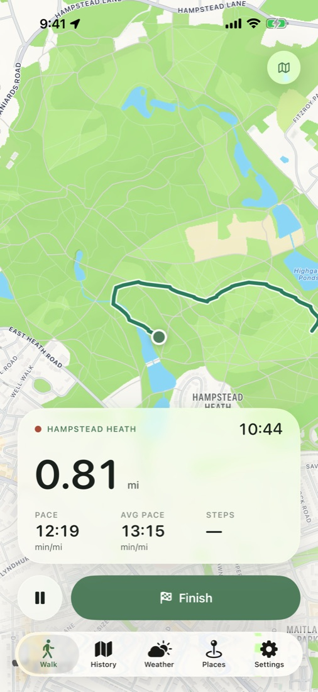
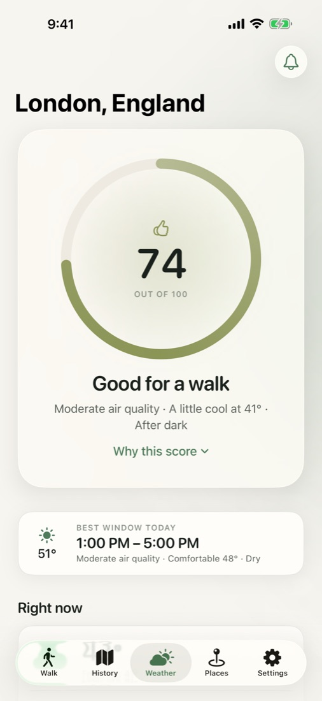
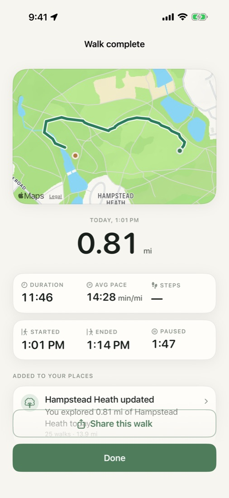
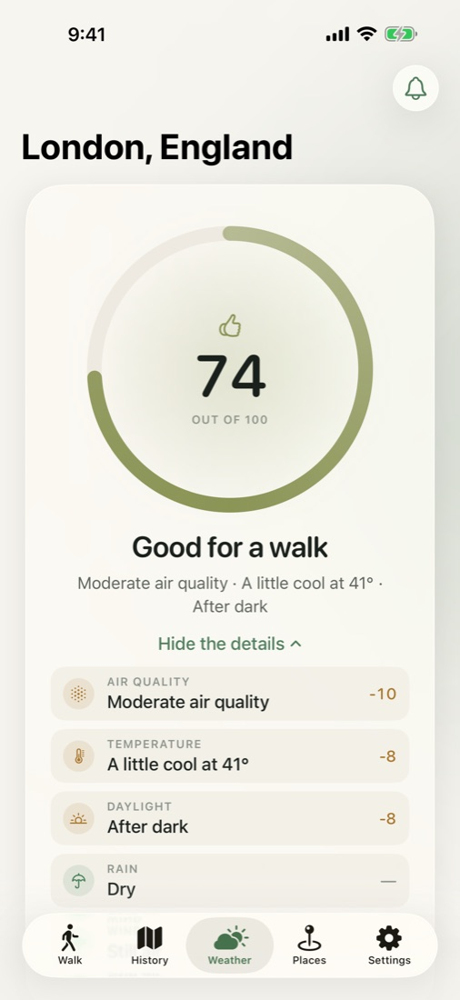
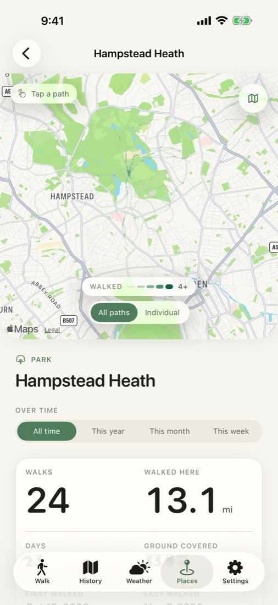
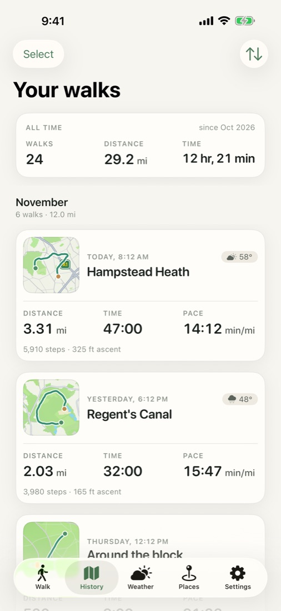
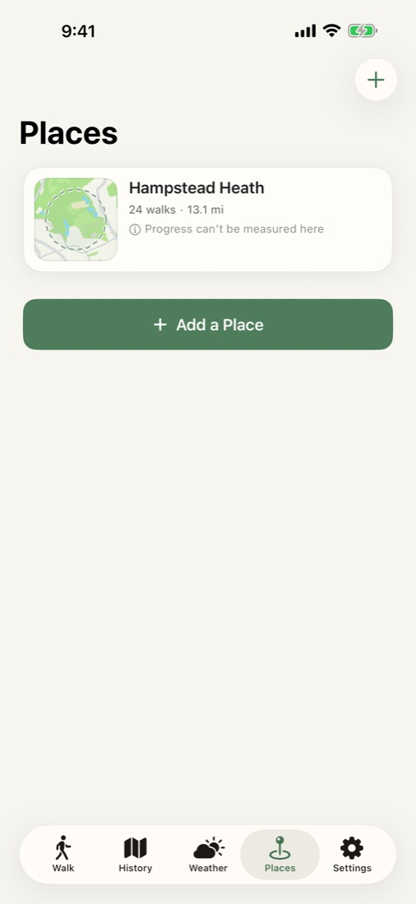

Make the
city yours.
Your route draws itself as you walk, every walk stays on your iPhone, and one honest score tells you if now is a good time to head out.


Made for
every kind of walk.
Press start and forget about it. Green Walk keeps recording with the screen locked and the phone in your pocket.
The daily loop
Distance, time, pace and steps for the walk you do every morning, with a goal that keeps you honest.
A new city
See every street you've covered light up, and find the corners you haven't explored yet.
Your favourite park
Save a place and watch your walks there add up — how often, how far, which paths.
Your route,
drawn as you go.
- A live map with your path tracing out behind you.
- Elapsed time, distance, current and average pace, steps.
- Interrupted by a call or a flat battery? Pick up exactly where you stopped.
- Start and follow a walk from Apple Watch, the Lock Screen and the Dynamic Island.

Know when
to head out.
- Temperature, rain, wind, UV, daylight and air quality, folded into one score out of 100.
- See why: every factor that lowered the score, and by how much.
- The best window today, an hourly strip and the week ahead.
- Optional alerts — at most two a day, only inside your walking hours.

Every walk,
kept.
- Search your history by place or by a note you left.
- Splits per kilometre or mile, an elevation profile and the weather you walked in.
- Places: parks, neighbourhoods or whole cities, with a heatmap of the paths you've walked.
- Delete any walk whenever you like — it's gone from your iPhone with it.

Your walks
stay yours.
Green Walk was built so there is nothing to hand over. No sign-up, no profile, no advertising SDKs.
Where are my routes stored?
On your iPhone, and nowhere else. Walks are never uploaded to us or anyone else.
When is my location used?
Only while a walk is actually being recorded, and to look up the weather where you are.
What goes over the network?
An anonymous coordinate for weather and air quality, map and place lookups, and the App Store purchase check. That's it.
Do you track me?
No. There are no analytics, no ads and no third-party trackers in the app.
A closer look.


Questions.
Is Green Walk free?
Yes. Recording, your recent history, the walking score and current conditions are free. Green Walk Plus unlocks your full history, 24-hour and 7-day forecasts, extra map styles and GPX export — as a weekly subscription or a one-time lifetime purchase. How Plus works.
Do I need an account?
No. There is nothing to sign up for. Open the app and press start.
Does it work with Apple Watch?
Yes. You can start and follow a walk from your wrist.
Why does recording stop when I lock my phone?
Allow location access Always for Green Walk in Settings → Privacy & Security → Location Services. The app only uses it while a walk is in progress.
Something isn't working.
We're happy to help — see the support page or email tonydigitalunicorn@gmail.com.